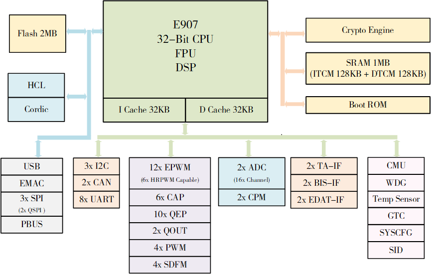

功能特性
27 Nov 2024
Read time: 3 minute(s)
- CPU
- 采用平头哥 E907 高性能 32-bit RISC-V 内核
- RV32IMAFDCP 指令架构
- 468 MHz @1.1V，552 MHz@1.2V
- L1 I/D-Cache 32 KB/32 KB
- 支持紧耦合存储 (TCM)，I/D-TCM 最大可配置 128 KB/ 128 KB
- 单精度/ 双精度浮点单元，集成 DSP 指令集
- PMP 安全保护
- 核内中断 CLINT 和中断控制器 CLIC
- 片内存储
- BROM 64 KB
- SRAM up to 1 MB，其中 256 KB 可配置为 TCM 使用
- 片内 NOR
Flash up to 2 MB
- 支持外部 SPI 接口直通模式烧录
- 支持 USB/ UART /JTAG 烧录
- 系统安全
- 支持数字签名安全启动方式
- CE 实现 AES/ TDES/ RSA 等加解密算法及 SHA/ HMAC 校准算法
- SPI_ENC 实现 片内 NOR Flash 在线解密
- SID 内置熔丝 2048-bit ，其中 512-bit 供自定义使用
- 内置 256-bit TRNG 产生器
- 系统保护
- 内置 THS 温度传感器，支持高低温报警和过温复位
- GTC 通用计时器
- 52 位计时器，提供系统心跳时钟，计时周期大于 35 年
- 调试模式下可配置为暂停计时或继续计时
- WDOG 看门狗
- 支持中断和复位，超时时间 1 ms ~ 37 小时可配置
- 调试模式下可配置为暂停计时或继续计时
- 硬件写保护机制
- 时钟和电源管理
- 内置三个 PLL
- PLL_INT0 用于 CPU 单独使用
- PLL_INT1 用于总线，内部模块，及低速接口模块使用
- PLL_FRA0 用于 SPI 模块使用，支持展频
- 内置三个 LDO
- LDO25 (2.5 V 100 mA)，用于系统复位启动、ADC 供电、eFuse 供电
- LDO18 (1.8 V 100 mA)，用于其他外设供电
- LDO1x (0.9~1.9 V 500 mA，每档 50 mV)，用于内核逻辑 供电(VDD_SYS)
- 内置三个 PLL
- 通用接口
- 最多支持一个 USB DEVICE
- 最多支持一个 EMAC，支持 RMII，支持 IEEE1588 协议
- 最多支持三个 SPI，支持标准 SPI 和 QSPI （仅 SPI1/2 支持 QSPI），可配置为 Master/ Slave
- 最多支持八个 UART，兼容工业标准 16550，波特率精度 < 2%
- 最多支持三个 I2C，支持 7-bit 和 10-bit 寻址，最高速率 400 kb/s
- 最多支持两个 CAN，支持 A 和 CAN2.0B，通信速率最高 1 Mbps
- 最多支持一个 PBUS，用于对外部设备地址空间进行读写访问
- 最多支持 88 个 GPIO，每个 IO 独立配置
- CORDIC
- 支持 sin/ cos/ arctan/ atan2/ phase 等数学函数加速
- 硬件电流环 (HCL)
- 支持自动获取 ADC 数据
- 支持自动获取 QEP/ TA-IF/ ENDAT-IF/ BISS-IF 编码器位置数据
- 支持 CLARKE/ PARK/ PID/ IPARK/ SVPWM 算法的硬件加速
- 内置死区补偿算法
- 支持自动更新 EPWM 输出占空比
- 支持断点模式
- Enhanced PWM (EPWM)
- 最多可支持 12 个互补 PWM 输出或 24 个独立 PWM
- 最多支持六个 HRPWM 输出，分辨率可达 156 ps
- 内置 16-bit 计数器
- 支持递增、递减或先递增后递减计数
- PWM 支持内部相位同步
- 支持死区时间控制
- 支持六个故障输入控制
- 支持脉冲输出功能
- CAP
- 最多支持六个输入捕获或六个独立 PWM
- 内置 32-bit 计数器
- 支持连续捕捉或单次捕捉
- 支持配置为 PWM 输出模式
- QEP
- 最多支持 10 个的 QEP 信号解析
- 内置 32-bit 的位置计数器
- 支持 AB 正交信号解析
- 支持 CW/CCW 信号解析
- 支持 CLK/DIR 信号解析
- 内置看门狗定时器
- Quadrature-pulse Output (QOUT)
- 最多支持两个 QOUT 信号输出
- 支持任意分频比的脉冲输出
- 输出最大支持 3 MHz 的正交脉冲信号
- ADC
- 两个 12-bit ADC，采样速率最高 4 Msps
- 两个 ADC 复用 16 个采样通道
- Comparator Module (CPM)
- 最多支持两个 CPM
- 内置 12-bit DAC 参考的窗口比较
- PWM
- 最多可支持四个通用 PWM
- 内置 16-bit 计数器，计数时钟分频最高可以达到 4096
- Sigma-Delta Filter Module (SDFM)
- 最多可支持四个 SDFM
- 支持串行输入解码
- 支持 SINC1/2/3 滤波器
- 支持 OSR 可配置 (1~256)
- T-Format/ A-Format Interface (TA-IF)
- 最多可支持两个编码器接口
- 兼容多摩川编码器和尼康编码器接口协议
- 最高支持 24-bit 位置数据读取
- 支持位置数据自动获取
- BISS Interface (BISS-IF)
- 最多可支持两个编码器接口
- 兼容 SSI/BISS-C 协议
- 最高支持 24-bit 位置数据读取
- 支持位置数据自动获取
- ENDAT Interface (ENDAT-IF)
- 最多可支持两个编码器接口
- 兼容 EnDat 2.1/2.2 协议
- 最高支持 24-bit 位置数据读取
- 支持位置数据自动获取
典型应用
- 伺服电机驱动器
- 步进电机驱动器
- BLDC 电机驱动器
- 交流变频器
- 光伏逆变器
- 数字电源
- PLC
功能框图
